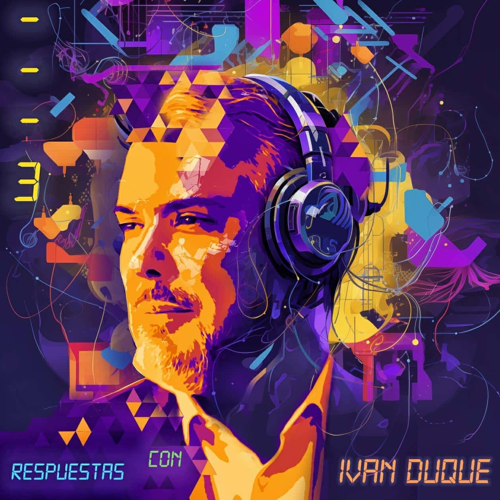

HORIZONTES
COMPARTIDOS
COMPARTIDOS
ANÁLISIS · EJEMPLO
Ejemplo de presentación para una columna de opinión.
UNA NUEVA EXPERIENCIA DIGITAL
Una propuesta editorial para explorar su trayectoria, sus iniciativas y sus publicaciones.
Concepto creativo de demostración. Los lemas no son citas del titular.
Fotografía procedente de ivanduque.com.
Uso referencial para revisión de esta propuesta.
UNA MIRADA EN MOVIMIENTO
Una pieza audiovisual conceptual para presentar el tono de esta nueva experiencia digital.
Iván Duque Márquez. Propuesta de rediseño. Ideas que conectan. Perspectivas que unen. Una propuesta para una nueva experiencia digital.
Diálogo. Sostenibilidad. Futuro. Tres ejes editoriales propuestos para explorar.
Colombia, perspectiva global. Conectar perspectivas. Una nueva forma de acercarse a las ideas.
Estos títulos son conceptos creativos de demostración, no citas ni declaraciones del titular.
TRAYECTORIA
Iván Duque Márquez
Presidente de Colombia, 2018–2022.
Un espacio para acercarse a su trayectoria, explorar sus publicaciones y consultar las iniciativas presentadas en su sitio oficial.
UNA ARQUITECTURA DE IDEAS
Agrupación editorial propuesta para facilitar la exploración. Los enfoques y textos definitivos requieren aprobación.
Un espacio para el pensamiento público, las instituciones y el diálogo.
↗02 / PERSPECTIVASUna mirada editorial a los desafíos ambientales y el futuro de la región.
↗03 / PERSPECTIVASIdeas para explorar la transformación, el conocimiento y el desarrollo.
↗CONEXIONES CON PROPÓSITO
Nombres consultados en ivanduque.com. Descubre cómo podrían presentarse dentro de una experiencia unificada.
INICIATIVA DESTACADA
El sitio oficial presenta este centro como un espacio dedicado a la democracia, la libertad económica y la equidad.
SALA DE PRENSA
Vista demostrativa del archivo editorial. Las piezas de esta sección son ejemplos de diseño, no noticias reales.
ANÁLISIS · EJEMPLO
Ejemplo de presentación para una columna de opinión.
DIÁLOGOS · EJEMPLO
Ejemplo de una ficha de entrevista o conversación.
PUBLICACIONES · EJEMPLO
Ejemplo de una ficha editorial de publicación.

PARA ESCUCHAR Y REFLEXIONAR
El sitio oficial presenta «Tres Respuestas» como un podcast de conversaciones con líderes y pensadores.
Consultar en el sitio oficial ↗Enlace externo · Requiere conexión a internetABRIR LA CONVERSACIÓN
Propuesta de canal para consultas institucionales, prensa e invitaciones.